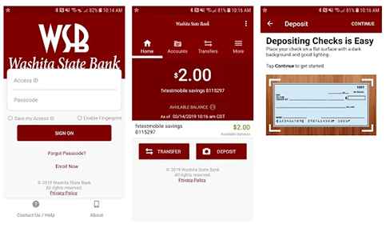

Mobile Banking
Help & Frequently Asked Questions

General
How much does this service cost?
There is currently no charge associated with this service, refer to our Mobile Banking Terms and Conditions for details. However, there may be charges associated with text messaging and data usage on your phone. Check with your wireless phone carrier for more information.
Is it secure?
Yes, the Mobile Banking service utilizes best practices from online banking, such as HTTPS, 256-bit SSL encryption, or password access and application time-out when your phone is not in use. In addition, no account data is ever stored on your device. And in the event your device is lost or stolen, the service can be immediately disabled by either going online to the Mobile Management website or calling us.
Do I need a text message or data plan?
Yes, a text messaging and/or data plan is typically needed, as data usage and/or text charges can become expensive without them. Please check with your wireless carrier for more information.
I’m not enrolled for online banking. Can I still use this service?
You must first enable your bank account(s) for online banking before using mobile.
What is Enrollment?
Enrollment is a one-time process that helps maintain your security. The enrollment process for both native and mobile browser Mobile Banking applications requires you to download the application, sign-in using your online banking Access ID and Passcode, answer security questions, accept the Terms and Conditions, and finally entering your device phone number (not applicable for tablets). The enrollment process for SMS text banking requires you to log in to online banking, select the Mobile Management link under the All Services & Settings tab, and follow the instructions to retrieve an activation code. The activation code will be required to begin using SMS text banking on your device.
What is Washita State Bank Mobile Banking?
Mobile Banking gives you access to your accounts from your mobile web browser or a downloadable Mobile Banking application, depending on your preference and your phone capabilities. Both options allow you to: view account balances, search recent account activity, transfer funds, and find nearby ATM or branch locations.
How do I sign up for Mobile Banking?
You must enroll your mobile device. The enrollment process for both native and mobile browser Mobile Banking applications requires you to download the application (for native) or enter the application URL (for browser), sign in using your online banking username and password, answer security questions, accept the Terms and Conditions, and finally enter your device phone number (not applicable for tablets). The enrollment process for SMS text banking requires you to log in to online banking, select the Mobile Management link under the All Services & Settings tab, and follow the instructions to retrieve an activation code. The activation code will be required to begin using SMS text banking on your device.
Is Mobile Banking supported on my phone?
Native mobile applications are available on many smartphones including: iPhone® and those utilizing the Android® operating system. Mobile Banking is also supported on most phones with a mobile web browser that supports cookies. Both native and mobile web browser applications can be found either by searching the app store on your phone or by entering the mobile web URL (https://mBanking.firstdata.com/wap/home/wsbbfok/en) in your phone’s browser.
How do I install the downloadable phone application?
- Native downloadable phone applications can be downloaded directly from iTunes® or Google Play® on your device.
- Alternatively, you can enter the following URL link https://mBanking.firstdata.com/wap/home/wsbbfok/en in your device browser to connect to the mobile browser application.
- Next, access the global navigation menu and look for a Download link. Click this link to download the application. If this link is not visible, a downloadable application is not available for your device.
Is Mobile Banking supported on my tablet?
Native mobile applications are available on many tablets including: iPad®, Kindle Fire® tablets, and those tablets utilizing the Android® operating system. Mobile Banking is also supported on most tablets with a mobile web browser that supports cookies. Both native and mobile web browser applications can be found either by searching the app store on your tablet or by entering the mobile web URL (https://mBanking.firstdata.com/wap/home/wsbbfok/en) in your tablet’s browser.
How do I install the downloadable tablet application?
- Native downloadable tablet applications can be downloaded directly from iTunes®, Google Play®, or the Amazon® app store on your device.
- Alternatively, you can enter the following URL link (https://mBanking.firstdata.com/wap/home/wsbbfok/en) in your device browser to connect to the mobile browser application.
- Next, access the global navigation menu and look for a Download link. Click this link to download the application. If this link is not visible, a downloadable application is not available for your device.
How do I access Mobile Banking on my device’s browser?
You can access the mobile browser application site at any time at (https://mBanking.firstdata.com/wap/home/wsbbfok/en)
I activated Mobile Banking on my device’s browser. Why am I being asked to activate again?
At the time of enrollment, a "cookie" is stored on your device’s browser which allows the Mobile Banking system to remember that you enrolled. The cookie is only visible by the Mobile Banking system and does not contain personal information. Some devices may require you to enable cookies or periodically erase them by clearing your cache, requiring re-enrollment. If you are experiencing this issue, check your device settings to ensure that cookies are enabled. If cookies are enabled and the issue persists, please contact your mobile network carrier for cookie support information on your mobile device.
How do I optimize my mobile web experience?
We recommend 3 steps for an optimal experience: 1) Ensure your phone’s browser has cookies enabled. 2) Enable stylesheets on your browser. 3) Bookmark our Mobile Banking site.
What is Spendable Balance?
Spendable Balance is a fast and simple way to calculate the money you have available. It is calculated by taking the available balance and subtracting any amount you want to "set aside" for items you know will be coming out of the account for bills, transfers, other commitments or simply setting a buffer for yourself. If you have multiple accounts, you have the ability to choose which account Spendable Balance applies.
What is Washita State Bank Text Banking?
Text banking gives you access to your accounts via text (SMS) messages on your phone. It’s a fast, easy way to look up account balances or recent account history by sending a text command to a shortcode.
What is Washita State Bank shortcode?
All text messages will come from, and should be sent to, 96865
Can I use both Text Banking and Mobile Banking on my phone?
Yes, you can use both options from the same phone. To do so you will need to enroll for both services prior to use.
Is Text Banking supported on my phone?
Text Banking will work on any text message (SMS) capable phone from one of our supported carriers.
How do I enroll in SMS Text Banking?
The enrollment process for SMS text banking requires you to log in to online banking, select the Mobile Management link under the All Services & Settings tab, and follow the instructions to retrieve an activation code. The activation code will be required to begin using SMS text banking on your device.
Which wireless carriers are supported?
We support all the popular US wireless phone carriers, including AT&T, Sprint, T-Mobile, and Verizon. If your carrier is not listed when you enroll, select ’Other’, or check back later, as new carriers will be added over time.
Will I receive unsolicited text messages?
No. You will only receive messages when you specifically request them with one of the Text Banking commands or if you subscribe to Mobile Alerts.
What are the Text Banking commands?
|
FUNCTION |
COMMAND |
DESCRIPTION |
|
Balance |
B |
Summary of
available balances for all accounts |
|
History |
H |
Summary of recent
transactions per account |
|
Command |
C |
List of available
Text Banking commands |
|
Help |
HE |
Help content for
Text Banking |
|
Login |
L |
Receive a URL for
the Washita State Bank Mobile Browser website (user
must first enroll their mobile web browser) |
|
Stop |
S |
De-activate all
Washita State Bank text services |
NOTE: You can check for additional available commands by activating your phone and sending C to 96865.
What is Mobile Check Deposit?
Mobile Check Deposit is a convenient, easy way to deposit checks from your mobile device into one of your accounts. With the Washita State Bank Mobile Banking app on your iPhone®, iPad®, or device utilizing the Android® operating system, you can take a photo of your check, enter the check information and securely submit your deposit for processing.
What accounts are required to be eligible for use with Mobile Check Deposit?
Checking and savings accounts are eligible for Mobile Check Deposit.
Where can I find the Deposit functionality within my downloaded app?
All users should first download the latest version of the app from iTunes® or Google Play®. After successfully completing the login process, you can either select the deposit button from the home screen or the deposit button from the More menu to begin your Mobile Deposit. Only those that are eligible for Mobile Deposit will be able to continue the deposit process after login.
What if I don’t see the Deposit functionality within my downloaded app?
Only devices that have an auto focus with rear-facing camera are supported for Mobile Check Deposit. If you do not see a "Check Deposit" option in, your device likely does not have a camera with auto focus.
Can I use Mobile Check Deposit with any mobile device?
Eligible phones include:
- iPhone® (3G or higher with iOS 7.1 or higher). Older iPhones® and devices without a camera are not supported.
- iPad® (2 or higher with iOS 7.1 or higher). iPad Mini® is also supported (with iOS 7.1or higher). Other iPad® versions and devices without a camera are not supported.
- The iPod Touch® is not supported at this time.
- Android® (4.0 or higher operating system) with a rear-facing camera that supports auto focus.
You must also download and install the latest version of the Washita State Bank Mobile Banking app from iTunes® or Google Play®.
Are there transaction limits with Mobile Check Deposit?
Currently, deposit limits are defined by Washita State Bank. Please call (580) 562-4871 for details
Are my checks deposited immediately?
Successfully submitting your check image with your mobile device will begin the deposit process. However, the processing time to complete the deposit may vary. Funds deposited before the daily cut-off time as determined by Washita State Bank on a banking business day (every day except Saturdays, Sundays and federal holidays) are normally available for withdrawal on the first business day after the day of the deposit. If you transmit an item after the cut-off time, or on a day we are not open, we may consider that the deposit was made on the next business day we are open. Check your deposit history in the deposit functionality within the application to see your deposit status.
How do I view my deposit history?
- 1. Sign in to the Washita State Bank Mobile Banking application.
- 2. Select the "Deposit" functionality.
- 3. Click on a single deposit history item to view the available transaction detail.
What should I do with the hard copies of my checks?
After successfully submitting a deposit with Washita State Bank Mobile Check Deposit, it is advisable that you keep all original documents in a safe place for personal records.
What types of checks are not eligible for Mobile Check Deposit?
- Checks must be made payable to only you. Joint checks or checks made payable to "Cash" are not allowed.
- Checks must be drawn on a U.S. bank or payable in U.S. currency.
- Checks must not be altered on the front of the check in any way.
- Checks must have an authorized signature. Demand drafts or remotely created checks are not allowed.
- Checks must not be dated more than six months prior to the date of deposit.
- Checks must not have previously been returned stop payment or account closed.
How do I deposit a check?
- Your check should have a valid account number and check number.
- Before you begin, properly endorse your check with your signature. The endorsement should read: For Mobile Deposit Only & include the account number of the account holder.
- Sign in to Mobile Banking and select "Deposit" functionality.
- Select the "Deposit" button from the Home screen or the More menu and navigate to the check deposit screen. You will need to complete the check deposit form in order to submit your deposit request. Note: "Continue" will appear disabled until all required fields are completed.
- You should make sure your check is placed on a dark, flat, well-lit surface.
- Select either the "Front" or "Back" camera icon to take a photo of your check.
- Align the check image with the Camera viewfinder frame. Be sure to take a photo of the check side that matches the helper text: "Front" or "Back" in the viewfinder.
- Tap the camera icon in the viewfinder to take the picture. If the preview looks correct, select the "Checkmark" button. If not, simply tap the red "Redo" button and try again.
- After you have successfully taken the "Front" and "Back" photos of your check, you will see small thumbnail image previews on the check deposit screen.
- In the "Amount" field, enter the amount of the check you are depositing. Be certain the entered amount matches the amount on the check.
- Tap the "Deposit To" field to select a deposit eligible account.
- After all the required fields are completed, the "Continue" button will appear enabled.
- Enter your email address in the "Email Receipt To" field if you would like to receive an email receipt of your deposit request.
- Review your entries and select the "Continue" button to complete the form.
- Select the "Approve" button to finalize and submit your deposit request.
I received an activation code for SMS text banking but never used it. What do I do now?
Activation codes expire after a specific period of time (expiry period will be provided along with your activation code). If you need a new one, return to the Mobile Management site in online banking and request a new activation code.
What happens if I get a new mobile device or change phone numbers?
If you get a new mobile device or change phone numbers, be sure to return to the Mobile Management site in online banking and update your mobile device profile. We recommend removing your old device and re-enrolling your new device.
Can I use Mobile Banking or Text Banking on more than one device?
Yes. Follow the enrollment and download instructions above to enroll a new device for either the native or mobile browser banking applications. Visit the Mobile Management link in online banking and simply add another device for SMS text banking.
I activated Mobile Banking on my device’s browser. Why am I being asked to activate again?
At the time of enrollment, a "cookie" is stored on your device’s browser which allows the Mobile Banking system to remember that you enrolled. The cookie is only visible by the Mobile Banking system and does not contain personal information. Some devices may require you to enable cookies or periodically erase them, requiring re-enrollment. If you are experiencing this issue, check your device settings to ensure that cookies are enabled. If cookies are enabled and the issue persists, please contact your mobile network carrier for cookie support information on your mobile device.
What if my device is lost or stolen?
If you are concerned about misuse of your device, contact your mobile service provider immediately to stop all wireless service. Additionally, sign in to online banking and disable or remove your device from the Mobile Management link under the All Services& Settings tab.
Do I need to re-enroll into Mobile Banking after I purchase a new device?
Yes. If you get a new mobile device or change phone numbers, be sure to return to the Mobile Management site in online banking and update your mobile device profile. We recommend removing your old device and re-enrolling your new device. Follow the enrollment and download instructions above to enroll a new device for either the native or mobile browser banking applications. Visit the Mobile Management link in online banking and simply add another device for SMS text banking.
Do password reset requirements for internet banking affect my ability to perform Mobile Banking functions?
Yes. Some financial institutions require that customers/members reset their internet banking password periodically. If you do not reset your internet banking password as required by your financial institution you will be unable to log into Mobile Banking.
I’m receiving an invalid credentials error message even though I’m entering valid credentials. What should I do?
If you've exceeded your institution's maximum number of failed login attempts in Mobile Banking, you must log in to online banking and reset your password. Once your password has been reset in online banking, you will be able to successfully log in to Mobile Banking with your new password. Please note that temporary passwords set by your financial institution are not recognized in Mobile Banking. If you are provided a temporary password, please login to online banking to create a permanent password before returning to Mobile Banking.
BlackBerry Support Enabling JavaScript for the mobile browser application
Without JavaScript enabled on your BlackBerry, you may not be able to view parts of the mBanking mobile web browser (SWAP) application. Users can manually activate JavaScript. See below for step by step instructions.
- 1. Press the "Menu" button to open the BlackBerry’s main application menu.
- 2. Click "Browser" to open the BlackBerry web browser.
- 3. Press the "Menu" button again while in the browser.
- 4. Select "Options" and click "Browser Configuration."
- 5. Put a check mark next to "Support JavaScript."
- 6. Press the "Menu" button.
- 7. Select "Save" to save your settings.
Resources
Report Lost/Stolen Debit Card
Monday - Friday: 9:00 a.m. - 4:30 p.m.
Call (580) 562-4871